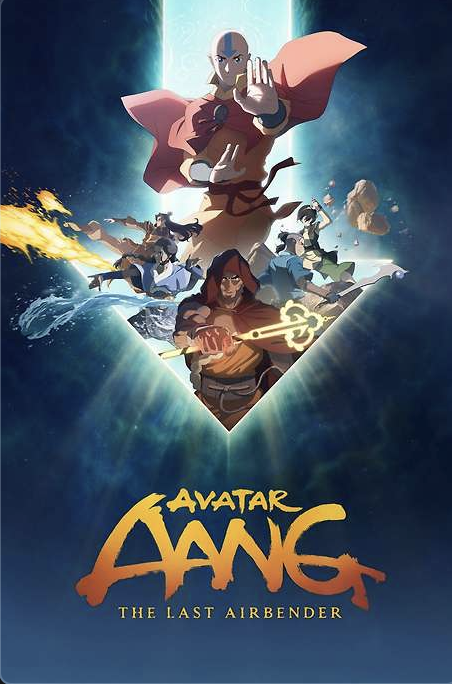
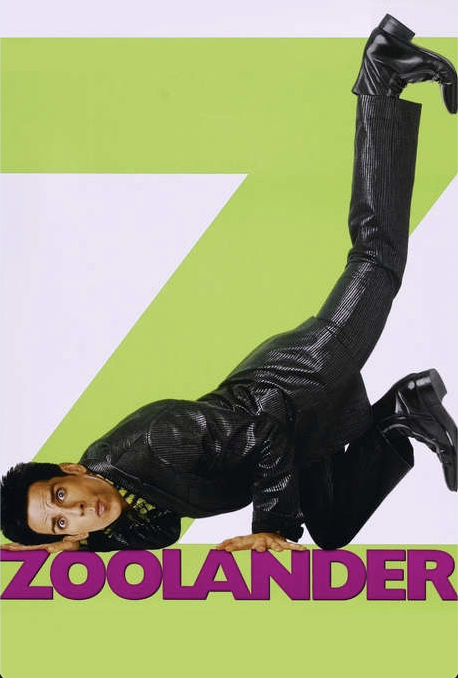
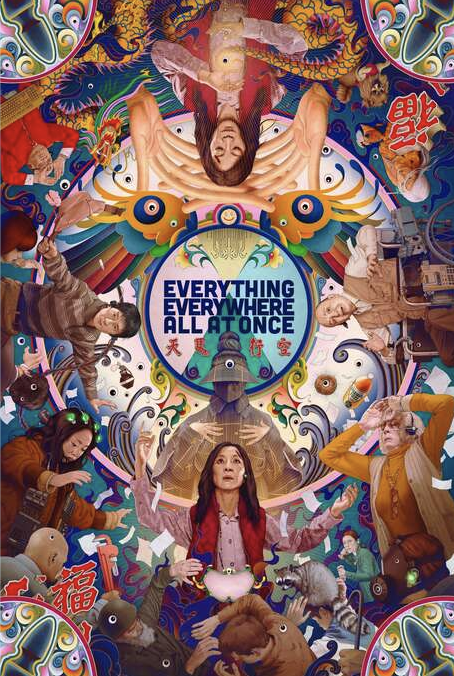
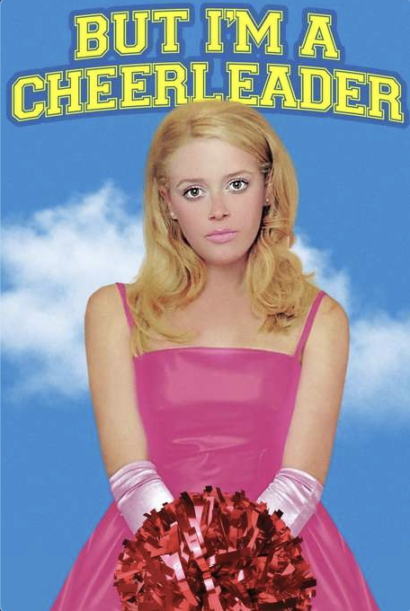

Avata Aang: The Last Airbender follows the Gaang in a pursuit of a possible lead to bringing the airbenders back into the world after a Republic City as been created.

Zoolander is a comedy parody movie about male models and their stereotype of being dumb and their ease of being manipulated.

Everything, Everywher, All at Once is an amazing film about succumming to the feeling of nothingness in a world of infinite possibilities.

But I'm a Cheerleader is a gay romance movie about a lesbian being sent to a conversion therapy camp to become straight again.